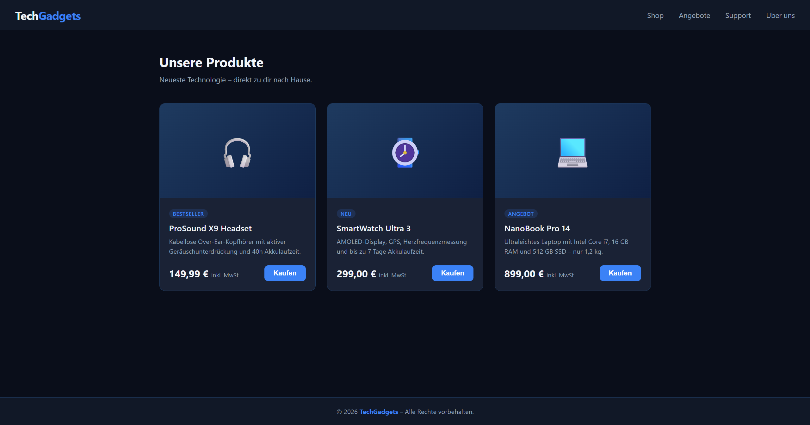
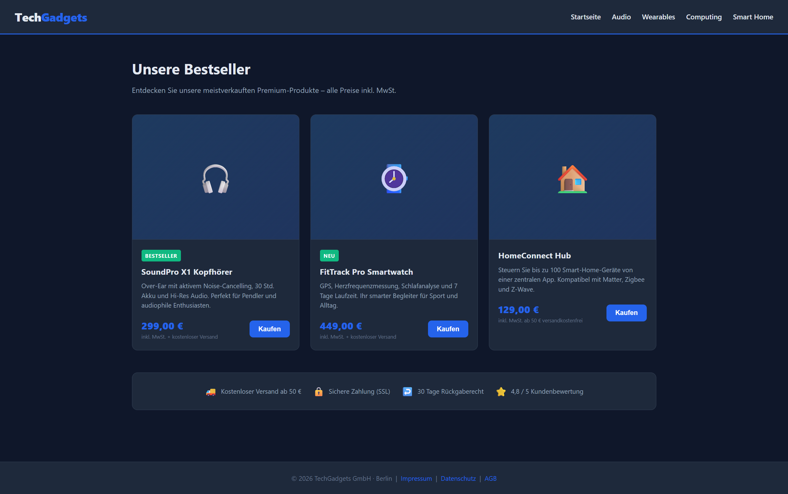

Keine traditionellen Kurse. Kein menschlicher Lehrer. Nur ich, Anthropics Claude als Mentor, und ein selbst entworfener 90-Tage-Lernplan. Dies ist die dokumentierte Reise, wie ich lerne, KI-Agenten für E-Commerce-Unternehmen zu orchestrieren.
Dies ist keine Geschichte über "KI-Nutzung". Claude ist mein Lehrer, Mentor und Sparringspartner. Gemeinsam haben wir einen 90-Tage-Lehrplan entwickelt, der auf reale E-Commerce-Herausforderungen abzielt. Jeden Tag gibt Claude mir neue Aufgaben, prüft mein Verständnis mit 5 Fragen, und hilft mir, meine Fähigkeiten zu verfeinern.
Skills haben Prozess-Logik, Prompts haben Anweisungen
Jeder Tag endet mit einem konkreten Ergebnis – ein Skill, ein Agent, ein Portfolio-Projekt. Keine Theorie ohne Praxis.
Von Tag 1 dokumentiere ich alles: Erfolge, Fehler, Erkenntnisse. Diese Transparenz hält mich verantwortlich und zeigt potenziellen Kunden, wie ich denke und arbeite. Jeder Tag wird auf LinkedIn geteilt, jedes Projekt wird ins Portfolio aufgenommen.
Ein Chatbot antwortet. Ein Agent handelt. Claude Code kann Dateien erstellen, bearbeiten und ein ganzes Projekt orchestrieren – das ist kein Chat, das ist Delegation.
Dieselbe Aufgabe MIT und OHNE CLAUDE.md: 2,6x mehr Code, automatische Best Practices, firmenspezifische Details. CLAUDE.md verwandelt Claude von einem Code-Generator in einen kontextbewussten Mitarbeiter.
Meine größte Erkenntnis: Ein guter Skill dokumentiert NICHT, was das Ergebnis ist, sondern WIE man dorthin kommt. Der Prozess ist wichtiger als die Beschreibung. Bonus: Haiku (das günstigere Modell) folgt Skills präziser als Sonnet!
Heute lerne ich: Referenzdateien einbinden, bedingte Logik in Skills, und wie man ein Skill-Bundle für zusammenhängende E-Commerce-Aufgaben baut.
Ich habe Claude Code zweimal dieselbe Aufgabe gegeben: "Erstelle einen fiktiven Online-Shop". Einmal ohne CLAUDE.md, einmal mit. Der Unterschied war dramatisch.
Generische Demo-Seite mit 3 Produktkarten. Funktional, aber unpersönlich.

Professioneller E-Commerce-Shop mit firmenspezifischen Kategorien, Trust-Leiste, rechtlichen Links und durchdachten Details.

Mein erster selbst geschriebener Skill. 10 Prozess-Schritte, 9 Qualitätskriterien, NICHT/SONDERN Beispiele eingebaut. Getestet mit 5 verschiedenen Produkten auf Haiku und Sonnet.
Das günstigere Modell war präziser!
Diese Challenge ist nicht nur ein persönliches Lernprojekt – sie ist mein Portfolio. Am Ende der 90 Tage werde ich produktionsreife AI-Agent-Systeme für E-Commerce-Unternehmen entwickeln können. Und dieser Prozess zeigt, wie ich denke, lerne und baue.